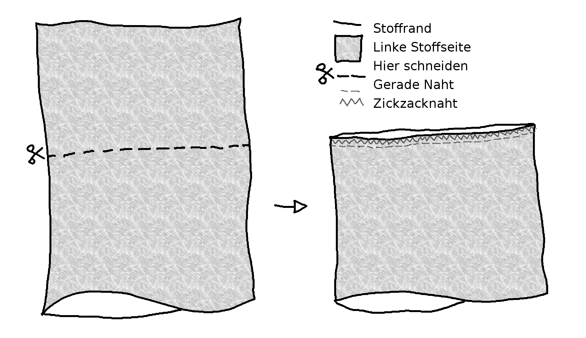
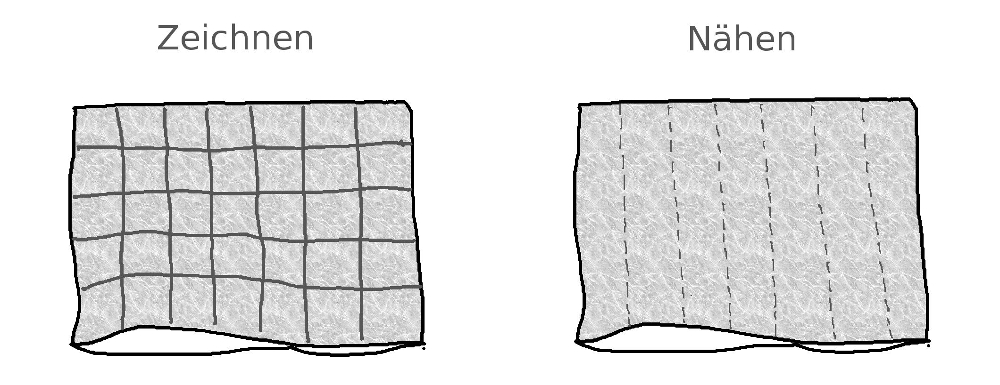
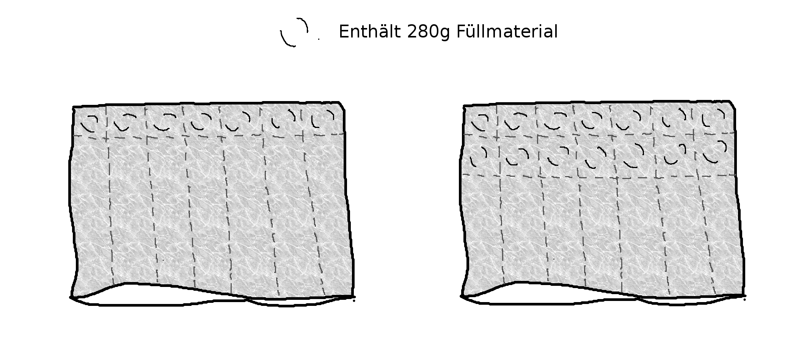

Gewichtsdecke (Anleitung)
This post also exists in English.
Seit ich weiss, dass es nichts bringt Overloads zu bekämpfen, verschanze ich mich oft unter eine Decke im Schlafzimmer oder auf dem Sofa. Manchmal höre ich dann Musik. Manchmal ist auch das mir zu viel. In diesen Phasen, wo ich das Pulsieren und Flackern der Welt davon abhalten muss immer wieder auf mich ein zu prallen, habe ich mir schon mehrmals eine Decke gewünscht, die schwer und nicht heiss ist. Da keine normale Decke diese beide Eigenschaften gleichzeitig erfüllen kann und kommerziell verfügbare Gewichtsdecken ein Preisschild haben, als wären sie aus Gold gemacht, blieb mir nur das Selbermachen. Ein bisschen Recherchieren, Einkaufen und Basteln später habe ich sie auch schon mal testen können. Fazit: sie ist eher klein, aber sonst super!
Damit jeder sich seinen Wunsch nach einer kühlen und schweren Decke auch ohne grosses Budget selbst erfüllen kann, habe ich eine Anleitung dafür geschrieben. Alles was man können muss, ist mit einer Nähmaschine entlang einer vorgezeichneten Linie zu nähen und Füllmaterial ab zu wägen. Ich machte eine Decke der Grösse von etwa 100 x 140 cm und einem Gewicht von 10 kg. Decke und Hülle kosteten 68 Chf (abhängig woher man das Füllmaterial kauft, geht es wahrscheinlich auch günstiger) und einen Tag Arbeit (4 bis 6 Stunden).
Was du brauchst:
- In dieser Anleitung benutze ich einen alten Bettbezug um eine Decke zu machen, die etwa halb so gross ist wie der ursprüngliche Bezug, plus eine neue Hülle für die Gewichtsdecke. Für eine doppelt so grosse Decke brauchst du 2 Bettbezüge, eine für die Decke und eine woran du nichts ändern musst, sondern die du einfach als Hülle für deine Gewichtsdecke verwendest. In diesem Fall und auch wenn du die Grösse frei wählen möchtest oder Meterware statt Bettbezüge benutzen möchtest, musst du diese Anleitung leicht abändern. Einen alten Bettbezug zu benutzen hat den Vorteil, dass du viele Sachen nicht mehr selbst machen musst, du kannst die bestehende Nähte und allenfalls den Verschluss (Knöpfe, Reissverschluss) wiederverwenden und musst also selbst keine Knöpfe oder Reissverschluss annähen können. Bettbezüge kannst du neu kaufen oder welche nehmen, die du schon hast. Ich habe mir einen für 9 Chf in einer Brocki gekauft.
- Eine Nähmaschine. Die muss nicht viel können, ein Gerad- und ein Zickzackstich reichen.
- Eine Stoffschere oder eine gute Schere. (Mit einer Stoffschere solltest du nie anderes Material schneiden, aber mit einer normalen Schere darf man auch Stoff Schneiden)
- Nähfaden. Wenn du die Wahl hast, kannst du die ‘heavy duty’ ‘ultrastark’ oder ‘outdoor’ Variante nehmen, ansonsten was du zu Verfügung hast.
- Ein Lineal. Je länger, je besser (meines war 75 cm lang), aber ein kürzeres geht mit ein bisschen mehr Aufwand auch.
- Füllmaterial. Da ich keine Lust auf Zoll und andere Schwierigkeiten beim Versand hatte, sondern einfach schnell loslegen wollte, habe ich das Füllmaterial in der Schweiz eingekauft, ohne nach zu forschen, wie viel es ins Ausland kosten würde. Ich schaute mir im Internet natürliche und synthetische Füllmaterialien an und entschied mich am Ende für ein synthetisches Granulat. Beim Aussuchen des Füllmaterials sollte man ein bisschen auf die Dichte achten. Auch andere feinkörnige Materialien wie Hirse (aber nicht Hirsespreu, wegen der zu geringen Dichte), Traubenkernen oder Reis würden sich in meine Augen für eine Gewichtsdecke eignen.
- Eine Küchenwaage mit Schale. (Und eventuell ein Trichter fürs Auffüllen)
Vorbereitung
Zuerst solltest du deine Stoff waschen. Neuer Stoff geht beim ersten Waschen oft noch recht ein. Zudem willst du, dass der Stoff sauber ist und nach deinem Waschmittel riecht. Wasche entweder bei der Temperatur die auf dem Etikett steht oder der Temperatur bei welcher du die Hülle in Zukunft waschen wirst.
1. Die Hülle

Zuerst drehe ich den Bettbezug auf links und schneide ihn dann in zwei Hälften (so ähnlich wie man einen A4-Blatt in zwei Hälften der Grösse A5 schneiden würde). Der Teil mit dem Verschluss wird die neue Hülle. Dazu müssen wir diesen dort wo wir zuvor geschnitten haben mit einer Naht wieder schliessen. Nähe also dort etwa 0.5 bis 1 cm vom Rand weg mit einen Geradstich. Der 0.5 bis 1cm breite Streifen des Stoffes zwischen der Geradstichnaht und dem Rand wird Nahtzugabe genannt. Diese Nahtzugabe zusätzlich mit einem Zickzackstich verstärken, damit der Stoff später nicht ausfranst. Jetzt musst du nur noch die Hülle auf Rechts drehen, und schon ist sie fertig!
2. Die Aussennähte verstärken

Jetzt machen wir die eigentliche Decke aus der anderen Hälfte des Bettbezugs. Damit die Aussennähte nicht so einfach einreissen, müssen sie noch verstärkt werden. Dadurch kommt die linke Seite des Stoffes an die Aussenseite der Decke, was nicht so schön aussieht. Das ist aber nicht so schlimm, da die Decke in eine schöne Hülle verstaut wird.
Zuerst drehe ich diesen Teil des Bezugs wieder auf rechts. Dann nähe ich mit einem Geradstich einmal knapp links entlang von den drei bestehenden Nähte. Diese Technik nennt sich ‘French Seam’. Wenn jetzt eine Naht aufreissen würde, gibt die zweite Naht zusätzlichen Schutz. Jetzt drehe ich die Hülle wieder auf links.
3. Messen und Abwägen

Im nächsten Schritt Zeichnen wir mit dem Lineal ein Raster auf den Stoff. Auf diesen Linien werden wir dann die Kammern für das Füllmaterial nähen. Ich habe Kammern von etwa 20cm x 20cm gewählt. Dies ergab in meinem Fall 5 x 7 = 35 Kammern insgesamt. Ich würde raten nicht zu kleine Kammern zu wählen. Zwischen 15 und 20 cm finde ich ideal, weil es sonst zu schwierig wird mit dem Auffüllen und Zunähen. Jetzt musst du noch das Gewicht des Füllmaterials durch die Anzahl Kammern teilen um zu wissen, wie viel Füllmaterial du in jede Kammer einfüllen musst. Ich kam auf gerundete 280 g pro Kammer. Bevor wir die ersten Kammern befüllen können, müssen wir noch die Rasterlinien die senkrecht zu der offenen Seite verlaufen mit einem Geradstich durchnähen. So ergeben sich sieben Spalten, die auf eine Seite offen sind.
4. Reihe für Reihe auffüllen

Ab jetzt wird die Decke immer schwerer. Es kann manchmal schwierig werden das ganze auf dem Tisch zu halten, da ein kleine abgerutschte Ecke schnell die ganze Decke mit hinunterreissen kann. Auch das Füllmaterial in den Kammern zu halten, während dem man die Reihe dicht näht, ist nicht immer einfach. Mit ein bisschen Geduld sollte es jedoch kein Problem sein. Ich bin wie folgt vorgegangen:
7 mal 280g Füllmaterial abwägen und mit dem Trichter in jede Spalte einmal 280g einfüllen. Die Decke schütteln, so dass das Füllmaterial ganz hinten in die erste Reihe von Kammern zu liegen kommt. Dann mit Geradstich die erste Reihe zunähen. 5 mal wiederholen, wobei das Verschliessen der letzte Reihe ein bisschen unterschiedlich ist, siehe dazu den nächsten Schritt.
5. Die letzte Naht schliessen und ausprobieren

Die letzte Naht ist wieder eine Aussennaht. Deswegen möchten wir diese wieder doppelt vernähen. Ich habe es mir nicht zu schwierig gemacht und wählte deshalb die einfachste statt die schönste Methode. (Die Decke wird eh immer in einer Hülle sein!) Diese geht so: die erste Naht etwa 0.5-1 cm vom Rand entfernt mit Geradstich nähen. Die zweite Naht, auch mit Geradstich, nochmals 0.5-1cm weiter weg nähen. Den geschnitten Rand auf die ersten Naht umklappen. Und zwischen den zwei Nähten die vier Stofflagen noch einmal mit einen breiten Zickzackstich durchnähen.
Fertig ist deine Decke. Du kannst sie jetzt in die Hülle legen und sofort ausprobieren. Viel Spass damit!